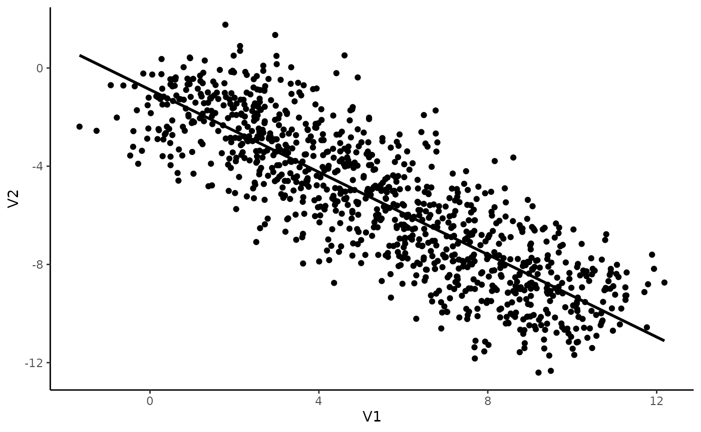
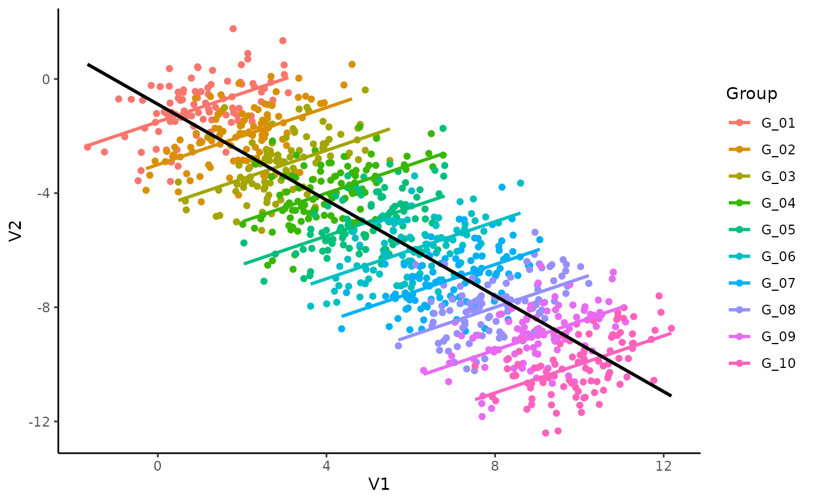

This vignette can be cited as:
citation("correlation")##
## To cite 'correlation' in publications use:
##
## Makowski, D., Ben-Shachar, M. S., Patil, I., & Lüdecke, D. (2019).
## Methods and Algorithms for Correlation Analysis in R. Journal of Open
## Source Software, 5(51), 2306. doi:10.21105/joss.02306
##
## A BibTeX entry for LaTeX users is
##
## @Article{,
## title = {Methods and Algorithms for Correlation Analysis in R.},
## author = {Dominique Makowski and Mattan S. Ben-Shachar and Indrajeet Patil and Daniel Lüdecke},
## doi = {10.21105/joss.02306},
## year = {2020},
## journal = {Journal of Open Source Software},
## number = {51},
## volume = {5},
## pages = {2306},
## url = {https://joss.theoj.org/papers/10.21105/joss.02306},
## }Imagine we have an experiment in which 10 individuals completed a task with 100 trials. For each trial - there will 1000 trials (10 * 1000) in total - we measured two things, V1 and V2, and we are interested in investigating the link between these two variables.
We will generate data using the simulate_simpson() function from this package and look at its summary:
library(correlation)
data <- simulate_simpson(n = 100, groups = 10)
summary(data)## V1 V2 Group
## Min. :-1.2 Min. :-12.4 Length:1000
## 1st Qu.: 3.0 1st Qu.: -8.1 Class :character
## Median : 5.4 Median : -5.5 Mode :character
## Mean : 5.5 Mean : -5.5
## 3rd Qu.: 8.0 3rd Qu.: -3.0
## Max. :12.4 Max. : 1.3Now let’s visualize the two variables:
library(ggplot2)
ggplot(data, aes(x = V1, y = V2)) +
geom_point() +
geom_smooth(colour = "black", method = "lm", se = FALSE) +
theme_classic()## `geom_smooth()` using formula 'y ~ x'
That seems pretty straightforward! It seems like there is a negative correlation between V1 and V2. Let’s test this.
correlation(data)## # Correlation Matrix (pearson-method)
##
## Parameter1 | Parameter2 | r | 95% CI | t(998) | p
## ---------------------------------------------------------------------
## V1 | V2 | -0.84 | [-0.86, -0.82] | -48.77 | < .001***
##
## p-value adjustment method: Holm (1979)
## Observations: 1000Indeed, there is a strong, negative and significant correlation between V1 and V2.
Great, can we go ahead and publish these results in PNAS?
Not so fast! Ever heard of the Simpson’s Paradox?
Let’s colour our datapoints by group (by individuals):
library(ggplot2)
ggplot(data, aes(x = V1, y = V2)) +
geom_point(aes(colour = Group)) +
geom_smooth(aes(colour = Group), method = "lm", se = FALSE) +
geom_smooth(colour = "black", method = "lm", se = FALSE) +
theme_classic()## `geom_smooth()` using formula 'y ~ x'
## `geom_smooth()` using formula 'y ~ x'
Mmh, interesting. It seems like, for each subject, the relationship is different. The (global) negative trend seems to be an artifact of differences between the groups and could be spurious!
Multilevel (as in multi-group) correlations allow us to account for differences between groups. It is based on a partialization of the group, entered as a random effect in a mixed linear regression.
You can compute them with the correlations package by setting the multilevel argument to TRUE.
correlation(data, multilevel = TRUE)## Parameter1 | Parameter2 | r | CI | t(998) | p
## ------------------------------------------------------------------
## V1 | V2 | 0.50 | [0.45, 0.55] | 18.24 | < .001***
##
## Observations: 1000For completeness, let’s also see if its Bayesian cousin agrees with it:
correlation(data, multilevel = TRUE, bayesian = TRUE)## Parameter1 | Parameter2 | r | CI | t(998) | p
## ------------------------------------------------------------------
## V1 | V2 | 0.50 | [0.45, 0.54] | 18.13 | < .001***
##
## Observations: 1000Dayum! We were too hasty in our conclusions! Taking the group into account seems to be super important.
Note: In this simple case where only two variables are of interest, it would be of course best to directly proceed using a mixed regression model instead of correlations. That being said, the latter can be useful for exploratory analysis, when multiple variables are of interest, or in combination with a network or structural approach.